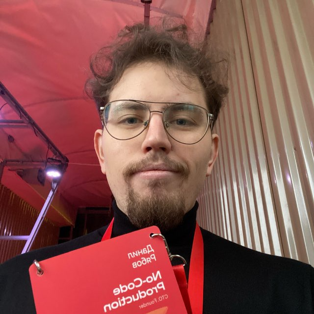

Создать сервис для бизнеса
Сайт, приложение для клиентов или внутренний инструмент. Помогу определить первую версию, реализую её и подготовлю к работе с пользователями.
Я Данил — разработчик из Сибири. Помогаю компаниям создавать и развивать сайты, приложения и внутренние сервисы. Разбираюсь в задаче, сам пишу код и при необходимости организую работу небольшой команды.

От клиентских приложений
до автоматизации работы компании.
Здесь — проекты, над которыми я работал самостоятельно и с командой IT Production. В каждом кейсе: задача компании, реализованное решение, моя роль и результат. Drimly — отдельный продукт, который я развивал четыре года.
Могу взять реализацию на себя
или подключиться к вашей команде.
Сайт, приложение для клиентов или внутренний инструмент. Помогу определить первую версию, реализую её и подготовлю к работе с пользователями.
Свяжу сайт, приложение и учётную систему. Автоматизирую передачу заказов и данных, подключу платежи и помогу сократить ручные операции.
Подключусь к вашей команде: разберусь в текущем решении, возьму задачи в разработку и помогу организовать выпуск обновлений. При необходимости — как руководитель небольшой команды.
Для меня работа начинается с разговора о том, как устроен ваш бизнес: что нужно клиентам, где сотрудники тратят время и что должно измениться после запуска. На этой основе предлагаю решение и план разработки.
В IT Production руководил небольшой командой разработчиков: оценивал задачи, распределял работу, проверял код и общался с заказчиками. Сам разрабатывал ключевые части продуктов. Сейчас могу подключиться к компании как технический партнёр или участник её команды.
Подробнее в резюмеОрганизовывал работу разработчиков и тестировщиков, оценивал задачи и контролировал качество. Лично участвовал в разработке и обсуждал с заказчиками требования, сроки и дальнейшее развитие продуктов.
Четыре года разработки и развития приложения с платным контентом: медиаплеер, офлайн-режим, курсы и подписки. Более 15 000 установок.
Мобильные приложения для стартапов и малого бизнеса. Самостоятельная разработка и прямое общение с клиентами.
Расскажите, какую задачу нужно решить и как вы работаете сейчас.
Обсудим решение и подходящий формат сотрудничества.